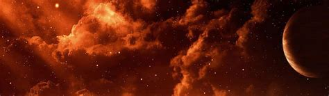
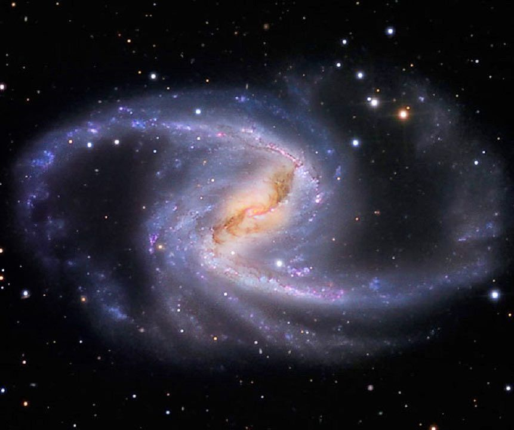
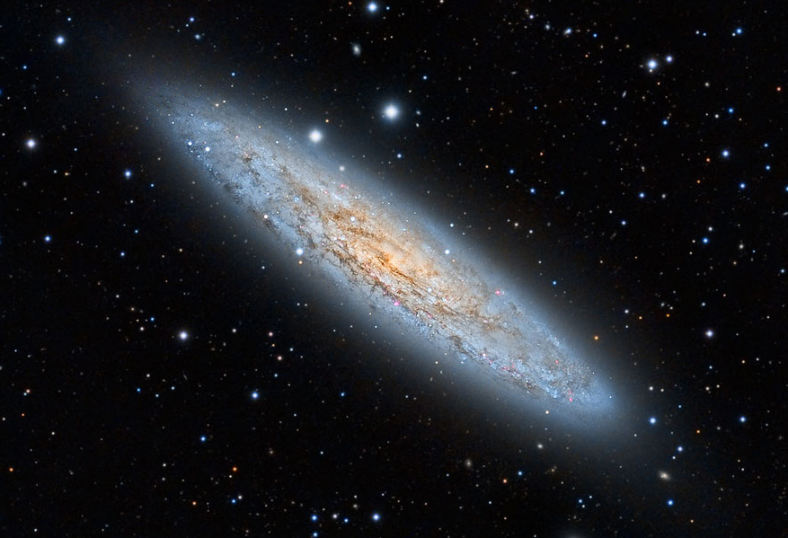
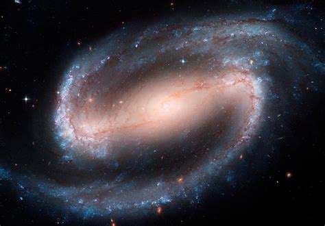
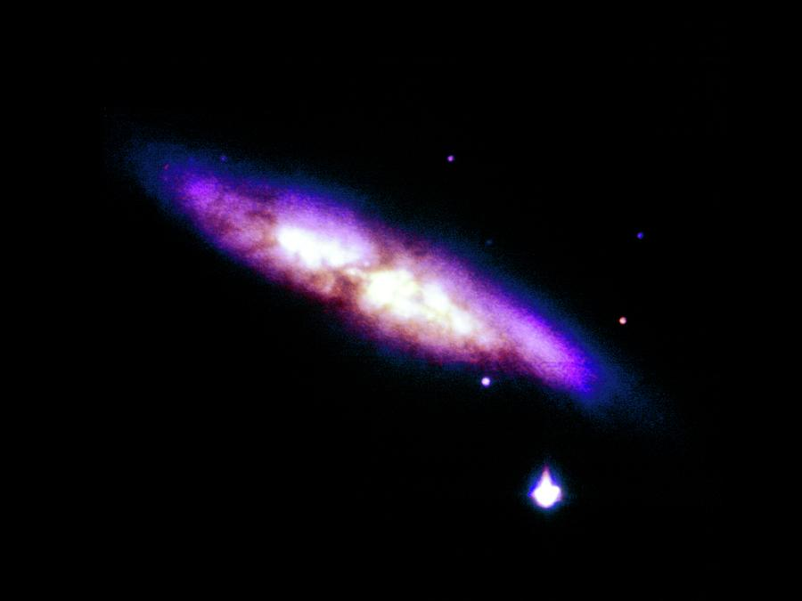
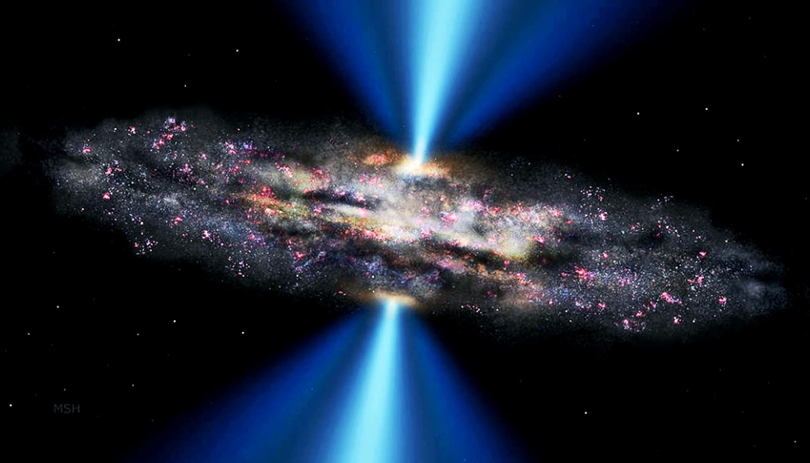
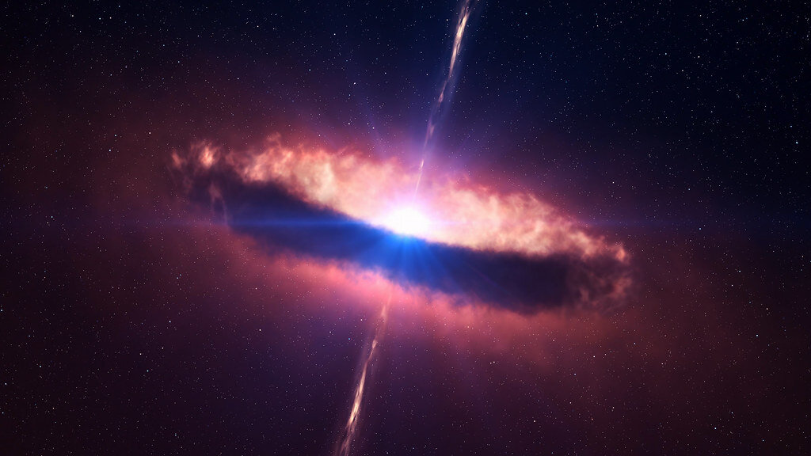
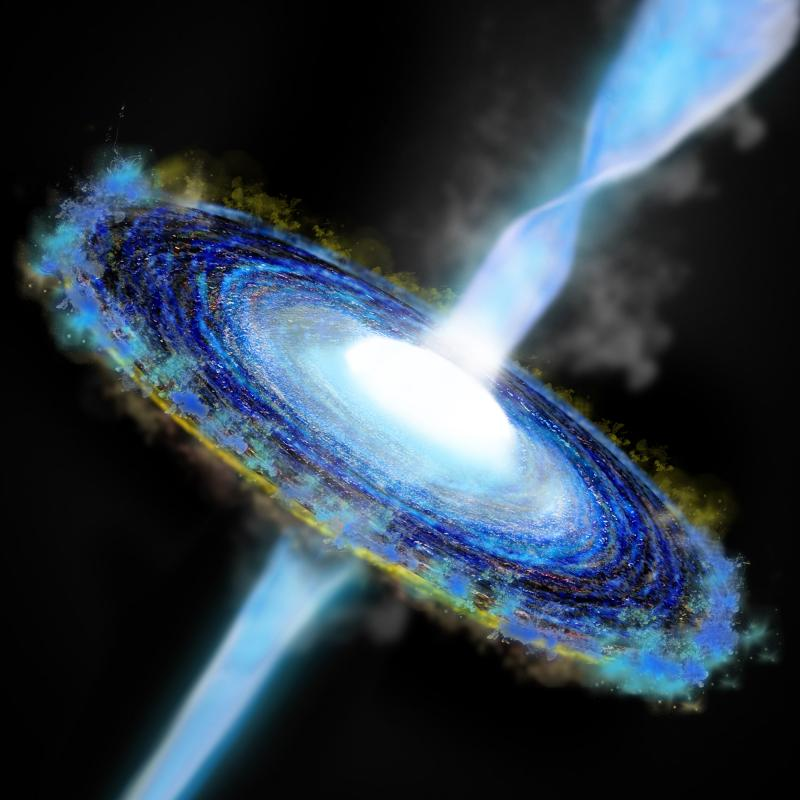

-

Spiral Galaxies
Our Milky Way is one example of a broad class of galaxies defined by the presence of spiral arms. These galaxies resemble giant rotating pinwheels with a pancake-like disk of stars and a central bulge or tight concentration of stars.
-

Elliptical Galaxies
Unlike spirals, elliptical galaxies usually contain little gas and dust and show very little organization or structure. The stars orbit around the core in random directions and are generally older than those in spiral galaxies since little of the gas needed to form new stars remains. Scientists think elliptical galaxies originate from collisions and mergers with spirals.
-

Lenticular Galaxies
Lenticular galaxies are a kind of cross between spirals and ellipticals. They have the central bulge and disk common to spiral galaxies but no arms. But like ellipticals, lenticular galaxies have older stellar populations and little ongoing star formation.
-

Irregular Galaxies
Irregular galaxies have unusual shapes, like toothpicks, rings, or even little groupings of stars. They range from dwarf irregular galaxies with 100 million times the Sun’s mass to large ones weighing 10 billion solar masses.
-

Active Galaxies
Around 10% of known galaxies are active, which means their centers appear more than 100 times brighter than the combined light of their stars. They can be spiral, elliptical, or irregular. The Milky Way is not currently an active galaxy, although it likely experienced a burst of activity in the past few million years.
-

Seyfert Galaxies
Seyfert galaxies, first identified in 1943 by American astronomer Carl Seyfert, are the most common active galaxies and also exhibit the lowest energies. All Seyferts look like normal galaxies in visible light, but they emit considerable infrared radiation. When observed in the infrared, some reveal bright emission from the donut-shaped torus. Some also emit X-rays. Seyfert galaxies tend to have lower radio luminosities, although some produce radio jets.
-

Quasars
Quasars are the most luminous type of active galaxy. They emit light across the electromagnetic spectrum, produce powerful particle jets, and can radiate thousands of times the energy emitted by a galaxy like the Milky Way. The nearest quasar, called Markarian 231, is located some 600 million light-years away, but we see many more quasars the farther we look.
-

Blazars
Blazars produce light across the electromagnetic spectrum. Their powerful jets point almost directly at Earth, so they appear brighter than other active galaxies. Observatories on Earth can sometimes detect high-energy particles – like neutrinos – produced within the jets and trace them back to their home galaxy. This information gives scientists a glimpse into the environment around the blazar’s supermassive black hole